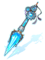
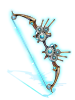
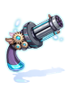

Wastewater Treatment Plant
Jump to navigation
Jump to search
Overview
Wastewater Treatment Plant is the first map that you get access to after starting the Episode 17.2 quests.
Access to the dungeon is made through the portal at from Varmundt's Mansion Map or if you're in Cor as shown on the minimap on the right.


Monsters
| Image | Name | Level | HP | Size / Race / Element |
|---|---|---|---|---|

|
Heart Hunter Skirmisher | 130 | 180,367 | Medium / Demi-Human / Neutral 2 |
| Sewage Venenum | 142 | 290,128 | Large / Demon / Dark 2 | |
| Sewage Cramp | 140 | 285,388 | Small / Brute / Poison 1 | |
| Sewage Waterfall | 141 | 287,897 | Medium / Formless / Poison 2 | |

|
Elite Bellare | 143 | 295,508 | Medium / Demi-Human / Ghost 1 |
Equipment
| Image | Name | Slot | Description |
|---|---|---|---|

|
Pigritia Rhythm [2] | Weapon |
|

|
Gula Teeth [2] | Weapon |
|
|  | Gluttony Stick [2] | Weapon |
|
|  | Superbia String [2] | Weapon |
|

|
Lust Shatter [2] | Weapon |
|
|  | Lust Crusher [2] | Weapon |
|


Cards
| Card | Type | Effects |
|---|---|---|
| Accessory Card |
| |
| Accessory Card |
| |
| Accessory Card |
| |
| Accessory Card |
|